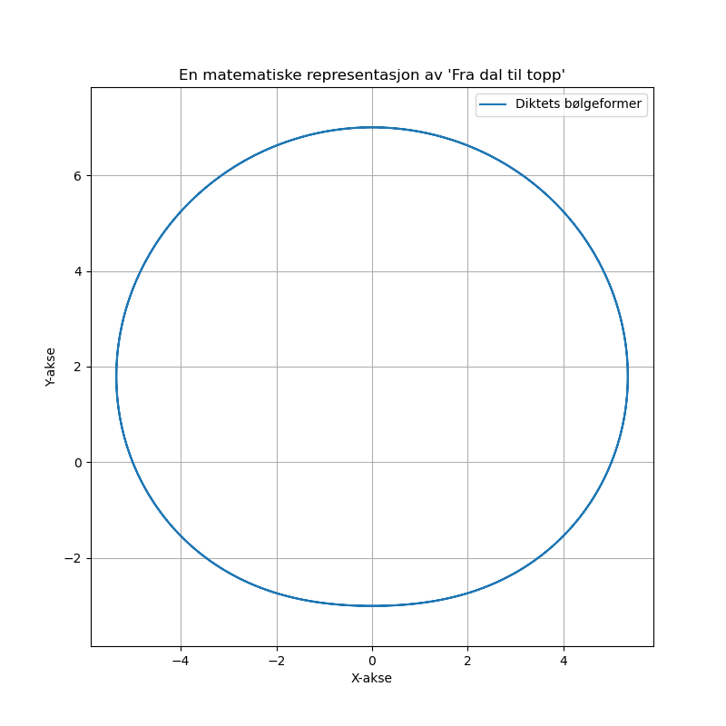

Dagens dikt
I en dal der solen står,
kryper ekko mot vinden gått,
fra fjell til hav, en bølge når,
som pulserer i takt med nattens gråt.
En sirkel dannes, perfekt og rund,
som en klokke i sekund forsvunnet,
hver rotasjon er et stille bunn,
der stjernene glitrer, evig beundret.
Fra dal til topp, og hav til fjell,
vi måler tiden i hvert et skall.
Grafen vokser, en spiral, en stav,
matematikkens dans, vår verdens krav.
---

Kode
import numpy as np
import matplotlib.pyplot as plt
# Definer parametere for den matematiske representasjonen av diktet
t = np.linspace(0, 4 * np.pi, 1000) # Tidsakse representerer "fra dal til topp"
radius = 5 + 2 * np.sin(t) # Amplituden representerer bølger fra "fjell til hav"
x = radius * np.cos(t) # X-koordinat som følger diktets "sirkel dannet"
y = radius * np.sin(t) # Y-koordinat som følger diktets "rotasjon"
# Plot den matematiske grafen
plt.figure(figsize=(8, 8))
plt.plot(x, y, label="Diktets bølgeformer")
plt.title("En matematiske representasjon av 'Fra dal til topp'")
plt.axis("equal") # Sirkel aksen blir balansert!
plt.xlabel("X-akse")
plt.ylabel("Y-akse")
plt.legend()
plt.grid(True)
plt.savefig('2025-03-20-19-58-10.png')